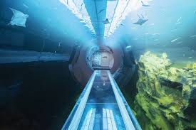
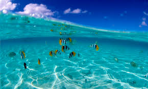

© Андрей Пикалов
О морях
1.В мире существует 63 моря.
2.Самым чистым морем считается море Уэддела, которое омывает побережье Антарктиды.
3.Филиппинское море – самое глубокое в мире, а его глубина насчитывает 10265 метров.
4.Саргассово море занимает самую большую площадь из всех существующих морей.
5.Саргассово море — единственное море, которое расположено в океане.
6.Белое море считается самым маленьким по площади.
7.Красное море является одновременно самым теплым и самым грязным морем на планете.
8.В Красное море не впадает ни одна река.
9.Морская вода содержит большое количество соли. Если взять суммарно все соли всех морей, то ими можно покрыть всю Землю.
10.Волны на морях могут достигать высоты в 40 метров.
11.Восточно-Сибирское море является самым холодным морем.
12.Азовское море считается самым мелким морем. Максимальная его глубина насчитывает всего 13,5 метров.
13.Воды Средиземного моря омывают самое большое количество стран.
14.На дне морей существуют горячие гейзеры с температурой до 400 градусов по Цельсию.
15.Именно в море впервые зародилась жизнь.
16.Если растопить морской лед, то его можно пить, почти не чувствуя соли.
17.Морская вода содержит примерно 20 миллионов тон растворенного золота.
18.Средней температурой воды морей считается 3.5 градусов по Цельсию.
19.На побережьях морей находится свыше 75 крупнейших городов мира.
20.В древние времена на территории Средиземного моря была суша.
Пираты
Несмотря ни на что, пираты существуют и в настоящее время
В наши дни поднять пиратский флаг над судном — тяжёлое преступление.
Вопреки расхожему стереотипу, пираты далеко не всегда поднимали чёрный флаг с черепом и костями, чаще всего
пиратские корабли вообще не поднимали флаг.
Позже, когда чёрный флаг стал стойко ассоциироваться с
пиратами,
его иногда стали поднимать перед атакой, чтобы деморализовать команду корабля-жертвы.
На Руси речных пиратов называли ушкуйниками. Впрочем, ушкуйники не только пиратствовали, но и торговали.
Корсары и флибустьеры являлись каперами, то есть «пиратами с лицензией».
На большинстве пиратских судов всегда царила жесточайшая дисциплина, а алкоголь был запрещён.
Самые известные порты, лояльные к пиратам — Тортуга и Порт-Ройал.
Оба они находились в Карибском море
(см.
интересные факты о Карибском море).
Мифы о пиратских кладах до сих пор не дают покоя многим людям.
Пират Бартоломью Робертс за три года захватил более четырёхсот судов.
Существуют упоминания, что знаменитый пират Чёрная Борода вплетал в свою
бороду тлеющие подожжённые
фитили,
чтобы повергать противников в ужас.
Френсис Дрейк — другой известный пират, которому мир обязан огромным количеством географических
открытий.
Многие пираты, даже очень бедные, носили в ушах драгоценные серьги,
чтобы в случае смерти пирата
послужить
своеобразной оплатой за нормальные похороны. Также среди пиратов бытовало мнение,
что проколотые уши
способствуют более острому зрению.
У английских моряков-подводников со Второй Мировой войны существует
негласная традиция, возвращаясь в
порт
после
успешной военной операции, поднимать
<над подводной лодкой пиратский флаг.
19 сентября — неофициальный Международный день пирата.
В 17-18 веках пиратство считалось одним из самых тяжких преступлений.
Стереотипная «прогулка по доске» — миф.
В 2011 году учёным удалось обнаружить корабль вышеупомянутого капитана
Чёрной Бороды — его некогда
наводящее
ужас судно «Месть королевы Анны».
Среди пиратов действительно встречались протезы ног и рук в виде деревянных
палок и стальных крючьев.
Пиратство всегда было опасной профессией, а других< протезов тогда не было.
Помимо общей доли после
удачного нападения, пираты всегда получали дополнительные
компенсации за
ранения
и травмы. Лишившийся конечности пират, например, на свою компенсацию вполне
мог осесть на берегу и
заняться
каким-нибудь делом.
Большинство пиратов пользовалось кличками вместо имён,
так как это помогало скрываться от
правосудия.
Меньше всех обычно получал корабельный плотник, так как он не участвовал в сражениях.
Капитан пиратского
судна обычно получал в десять раз больше обычного матроса.

О островах
Безусловно, если речь идет о таких чудесных "наростах", как остров Ява,
Мальдивы, Куба, Исландия и т.д., то,
что
предназначено для широкого круга - туристов, здесь цивилизация в самом, что ни на есть в "соку".
Красивый маленький остров
Но есть и обратная сторона медали, то, чего
мы никогда не видовали и не слышали. Обо всем этом читайте
далее. И
так интересные факты о островах.
Знаете ли вы, что существует остров с необычным названием "Недоразумение"? Расположен он недалеко от Магадана. А
имеет такое странное имя потому, что в
свое время его просто не заметили в очередной экспедиции.
Остров Недоразумение недалеко от Магадана
Есть остров и такой, коим владеют сразу две страны - Испания и Франция.
Остров Фазанов отдан "на
растерзание" им
каждой по шесть месяцев. Местность здесь дикая, туристы его и знать не знают.
Но "смена караула" здесь по
расписанию - каждые полгода.
Остров Фазанов - принадлежит Франции и Испании
Есть в нашем мире очень неординарный аэропорт,
где полосы для самолетов песчаные, а сам он расположен прямо
на
берегу. Такое чудо кроется в Шотландии, на о. Барра. Бесконтрольно сюда
никак не попадешь, так как когда
вода
выходит из берегов, полосы оказываются под водой.
Остров Барра в Шотландии
А еще есть "кладбищенский" остров. Очень маленький по своим размерам, всего 42 км, а такой вот "гибельный".
Зовут его о. Сейбл и "живет" он в Атлантическом океане недалеко от Канады.
По официальным данным здесь зарегистрировано 450 кораблекрушений.
остров Сейбл в Атлантическом океане
Канадские территории богаты на необычность. Так, там есть остров, "почивающий"
на озере и больше его по
квадратуре. Странно, но правда. Название у острова
- Рене-Левассёр, площадь которую он занимает - 2040
кв.км, а
это на 100 кв.км больше озера Маникуаган.
Остров Рене-Левассёр
Если вы боитесь медуз, сюда вам дорога закрыта. Место, которое просто кишит
этими морскими созданиями,
находится
в Тихом океане на Скалистых островах.
Там Медузное озеро. При приблизительных подсчетах оказалось, что около
2
млн. медуз(!) живут в нем.
Остров с медузами
Посещайте только те острова, которые
предназначены для нас - туристов. Ну,
а если вы хотите быть как
Колумб
и открыть что-то доселе неведомое, все в ваших руках.
О обитателях океана
На земле сохранились всего 6 видов двоякодышащих рыб, 4 из которых, протоптеры, обитают в Африке. Когда вода в
реках
и озерах пересыхает,
протоптеров спасает то, что у них есть легкие. Они выкапывают себе в мягком илистом дне
гнезда и спят в них до начала следующего сезона дождей,
иногда дольше года. Дышат они при этом воздухом,
поступающим через верхушку гнезда. А местные рыбаки вместо удочек и сетей отправляются на рыбалку с
мотыгами
и
лопатами.
Самое длинное животное на Земле —
не голубой кит, а медуза львиная грива. Ее щупальца достигают 37 метров в
длину.
Сердце синего кита бьется 9 раз в минуту и достигает размера среднего автомобиля.
Самый большой синий кит
в истории был выловлен норвежскими китобоями в 1926 году. При длине в 34 м, кит
весил
177 тонн.
Длина гигантского кальмара достигает 18 м. На телах кашалотов китобои часто наблюдали глубокие рубцы от
присосок.
<
Самое шумное существо в океане
- креветка. Шум большой стаи креветок способен «ослепить» сонар подводной
лодки.
Кит не пускает фонтанчики,
он так выдыхает струю углекислого газа, окутанную брызгами. Жирность молока кита
— 50
%.
Самый большой моллюск — тридакна —
обитает в теплых водах Индийского океана. Ее раковина может достигать 2 м
в
диаметре и 250 кг веса.
Даллия — самая живучая рыба в мире. В пресных водоемах Чукотки и Аляски она выживает, вмерзая в лед на несколько
месяцев.
Рыба Abyssobrotula galatheae была обнаружена в желобе Пуэрто-Рико на глубине 8370 м. Давление на такой глубине
превышает 800 атмосфер, или 800 кг
на 1 квадратный сантиметр.
Таких видов рыб, как лосось и форель, не существует. Это собирательное название более трех десятков видов рыб
семейства лососевых.
Система коммуникации дельфинов настолько развита, что у каждого дельфина есть свое имя, на которое он
откликается,
когда к нему обращаются
сородичи.
У осьминога не восемь ног, а две.
Остальные шесть щупалец по сути являются руками. Так что правильнее
осьминога
называть
«двуногий шестирук». Если осьминог утратит щупальце в борьбе,
он отрастит новое.
Моллюск-хищник рапана был занесен в Черное море
в 1947 году из Японского моря и к
настоящему времени
съел
почти всех устриц,
мидий и морских гребешков. Так сильно расплодиться
рапана смогла потому, что в Черном
море
отсутствуют ее естественные враги
— морские звезды.
Некоторые паразиты продлевают хозяину жизнь,
например, личинка жемчужницы выделяет вещество, замедляющее
старение атлантического лосося.
Самцы гладких китов обладают самыми
крупными яичками среди животных — вес каждого достигает 500 кг.
Киты, способные погружаться на глубину в сотни метров,
не страдают кессонной болезнью, потому что перед
погружением не вдыхают,
а выдыхают, почти полностью опустошая легкие.
Растворенного в крови кислорода им
достаточно для пребывания на глубине в течение 40 и более минут.
Единственный известный науке головоногий моллюск, способный жить на
глубинах более 1000 метров, выглядит
ужасающе и называется соответствующим образом —
кальмар адский вампир.
Когда рыбы плывут против течения, они тратят меньше энергии,
чем плавая в спокойной воде. Это объясняется
умением рыб улавливать
возникающие водовороты, лавируя с минимальным напряжением мышц.
Такой способ
плавания
можно сравнить с движением парусной яхты против ветра.
Рыбы могут страдать морской болезнью,
которая проявляется в виде головокружения и потери ориентации.
Несмотря на жуткую репутацию, пираньи крайне редко нападают на людей.
Однако в сентябре 1981 года, когда
возле
города Обидус на Амазонке перевернулось судно.
И, по словам очевидцев, многие из 310 погибших не утонули, а
были
разорваны пираньями.
Если аквариум с золотыми рыбками держать в темноте — рыбки побелеют.
Морские черепахи постоянно плачут.
Таким способом они избавляются от излишка соли в организме
— их
слезные
железы выполняют функцию почек.
Устрицы содержат в 20 раз больше холестерина, чем куриные яйца.
Если разрезать морскую звезду на части, то со временем каждая из частей вырастет в полноценную звезду.
Рыба латимерия или же целакант (Latimeria chalumnae) считалась вымершей десятки миллионов лет назад.
Когда
местные жители сказали учёным, что такая рыба бывает и часто продаёт
ся на местном рынке, учёные лишь с
досадой
отмахивались.
Ну что взять с необразованных рыбаков?
Каково же было их удивление, когда в 1938 году на
рынке
на
Коморских островах учёные увидели… латимерию!
Но представьте себе, что учёные мужи не успокоились и заявили,
что это единичный случай, последняя и вообще
неправда.
В 1997 году латимерию опять нашли на рыбном базаре в Индонезии!
В тёплых морях живут удивительные одноклеточные организмы –
радиолярии (Radiolaria), одни из старейших живых
существ на земле. А
удивительны они тем, что, будучи одноклеточными,
они имеют… скелет из окиси
кремния
или солей стронция.
Скелеты их настолько красивы, что послужили вдохновением для многих художников.
Но… как же они тогда размножаются? Ведь
одноклеточные организмы обычно размножаются делением!
Радиолярии
нашли интересный с
пособ для размножения - через
отверстия в скелете они выпускают зародыши - амёбовидные
жгутики,
которые вырастают потом во взрослую особь.
Но подробно
исследовать это пока так и не
удалось…